SIGNAL / 47: CAPTURED Visuell vurdering: UNVERIFIED. Captures are evidence for manual review; no automatic visual PASS. Software renderer does not verify hardware performance.
Manifest
dinerlight_arrival: CAPTURED 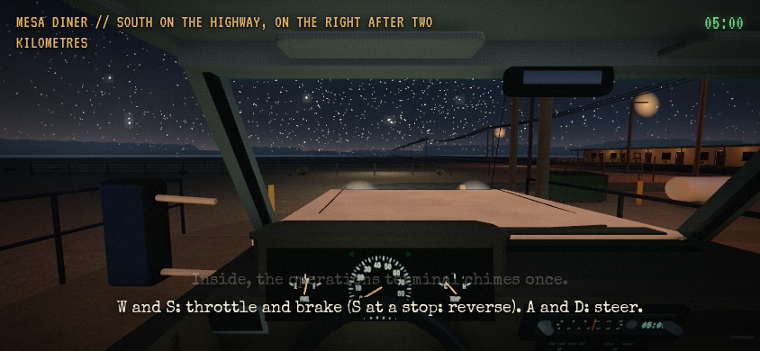
route_start | path 0.0 m | actual mile None | map XYZ [32.9, 0, -292] | clock 18000.57 | saro/saro 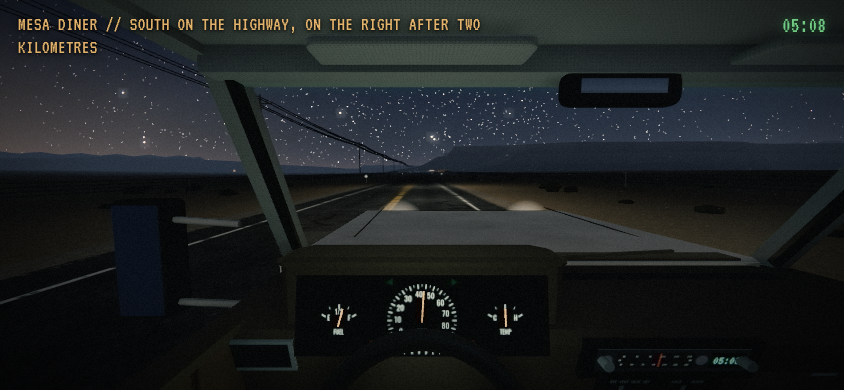
approach_start_300m | path 2033.9 m | actual mile None | map XYZ [-1.8000000000174623, -0.20527506676227134, 1717.3284972790977] | clock 18503.32 | road/road 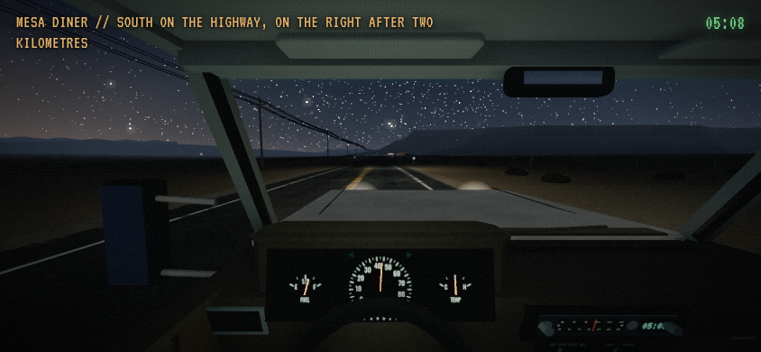
forward_040m | path 2073.0 m | actual mile None | map XYZ [-1.8000000000174623, 0.3058906891729949, 1756.4321673813608] | clock 18512.75 | road/road forward_080m | path 2112.1 m | actual mile None | map XYZ [-1.8000000000174623, 0.8613948339298272, 1795.535837483624] | clock 18522.18 | road/road 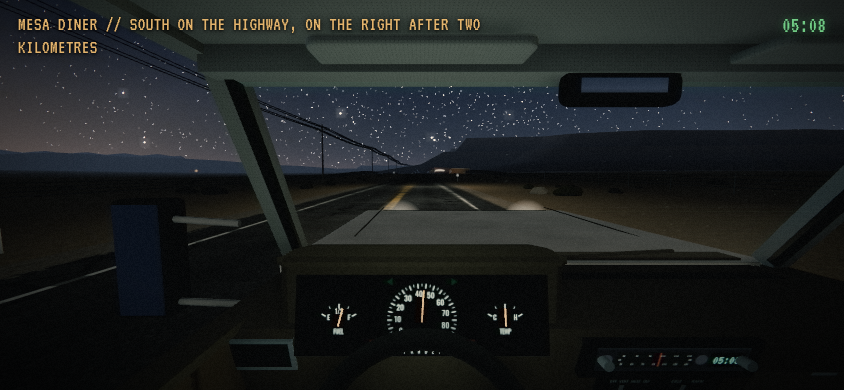
forward_120m | path 2151.2 m | actual mile None | map XYZ [-1.8000000000174623, 1.4416811140606858, 1834.639507585887] | clock 18531.61 | road/road forward_160m | path 2190.3 m | actual mile None | map XYZ [-1.8000000000174623, 2.0392248358413476, 1873.7431776881501] | clock 18541.04 | road/road 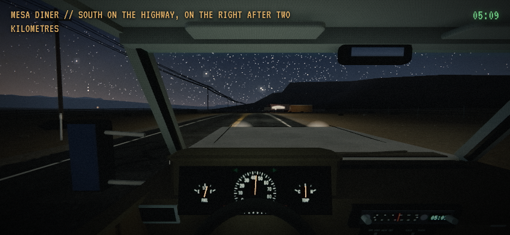
forward_200m | path 2229.4 m | actual mile None | map XYZ [-1.8000000000174623, 3.0524445571186347, 1912.8468477904132] | clock 18550.47 | road/road 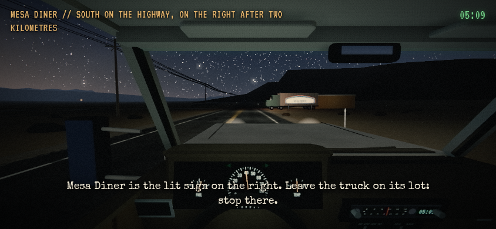
forward_240m | path 2267.1 m | actual mile None | map XYZ [-1.8121416865733408, 4.2822942522263485, 1950.5278676739363] | clock 18559.63 | road/road 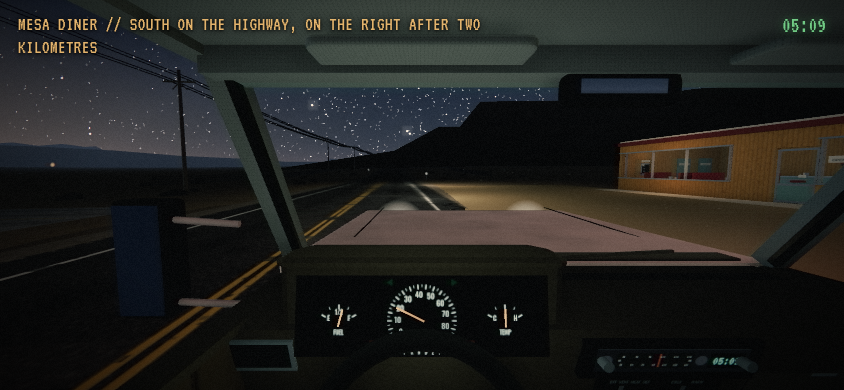
forward_280m | path 2306.7 m | actual mile None | map XYZ [-2.502016624114731, 4.311849895637478, 1990.1493394220292] | clock 18570.14 | road/road 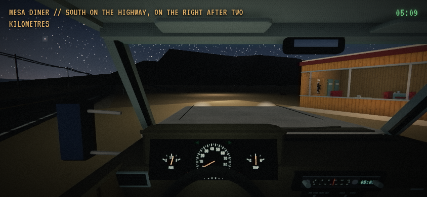
prepark_forward_lights_on | path 2321.2 m | actual mile None | map XYZ [-7.305052263424841, 4.308961195240905, 2003.6378371634435] | clock 18578.00 | road/road 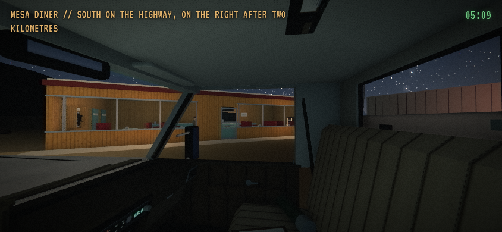
prepark_facade_lights_on | path 2321.2 m | actual mile None | map XYZ [-7.305052263424841, 4.308961195240905, 2003.6378371634435] | clock 18578.00 | road/road 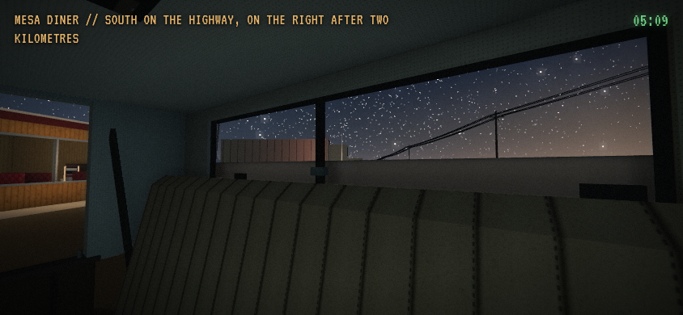
prepark_sign_lights_on | path 2321.2 m | actual mile None | map XYZ [-7.305052263424841, 4.308961195240905, 2003.6378371634435] | clock 18578.00 | road/road 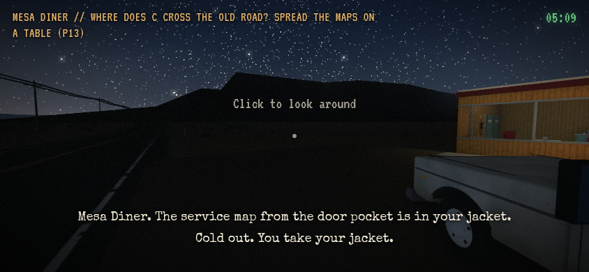
arrival_end_parked | path 2321.4 m | actual mile None | map XYZ [-7.406402976314894, 4.30903693206448, 2003.7796673157125] | clock 18579.17 | diner/None 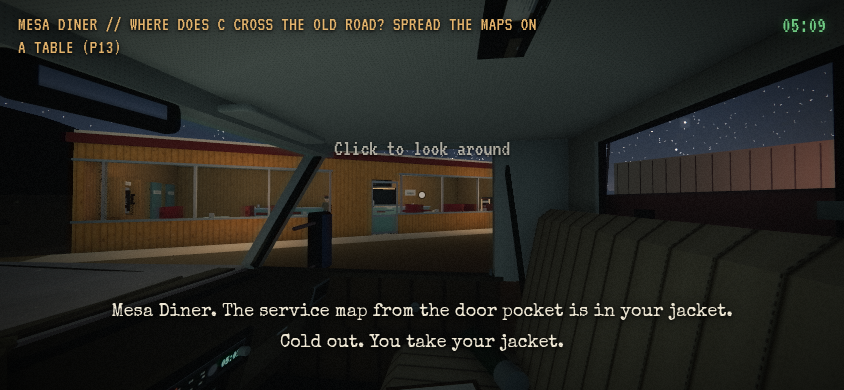
parked_facade_lights_off | path 2321.4 m | actual mile None | map XYZ [-7.406402976314894, 4.30903693206448, 2003.7796673157125] | clock 18579.17 | diner/None 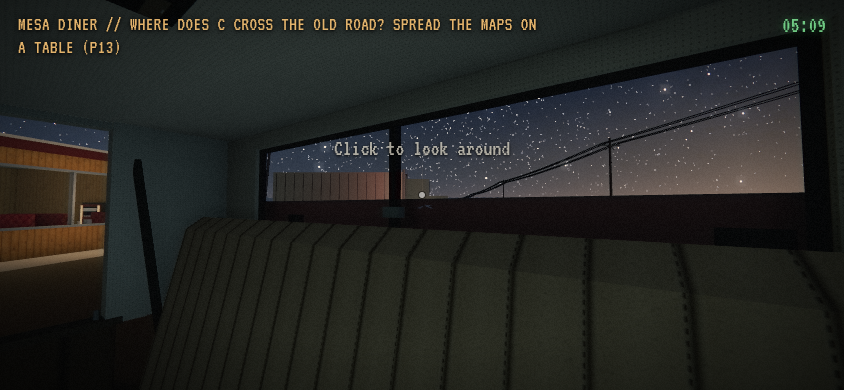
parked_sign_lights_off | path 2321.4 m | actual mile None | map XYZ [-7.406402976314894, 4.30903693206448, 2003.7796673157125] | clock 18579.17 | diner/None 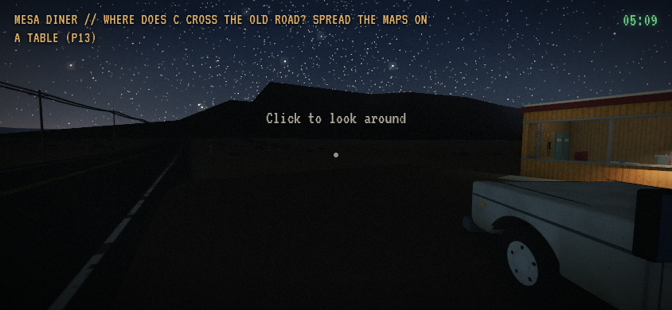
ultra_onfoot_after_0_5s | path 2321.4 m | actual mile None | map XYZ [-7.406402976314894, 4.30903693206448, 2003.7796673157125] | clock 18579.67 | diner/None 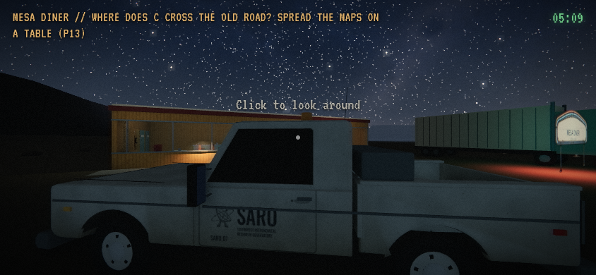
ultra_onfoot_facade | path 2321.4 m | actual mile None | map XYZ [-7.406402976314894, 4.30903693206448, 2003.7796673157125] | clock 18579.67 | diner/None 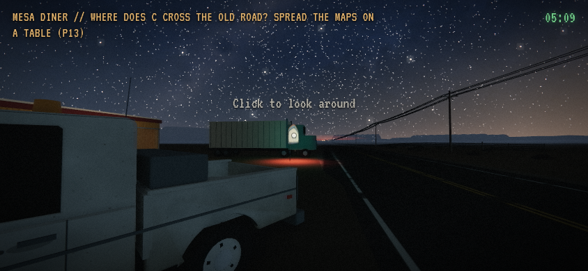
ultra_onfoot_sign | path 2321.4 m | actual mile None | map XYZ [-7.406402976314894, 4.30903693206448, 2003.7796673157125] | clock 18579.67 | diner/None dinerlight_departure: CAPTURED 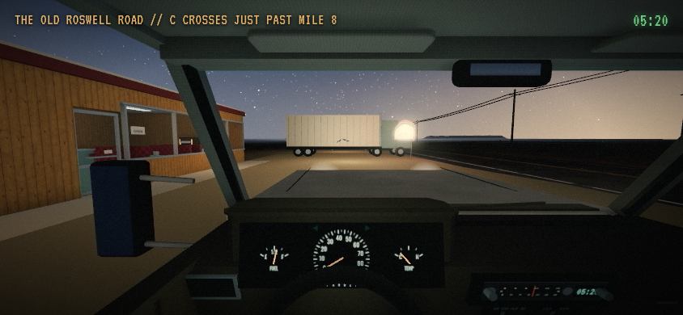
route_start | path 0.0 m | actual mile 0.0025606770477342167 | map XYZ [-11.050000000000182, 4.309006389843889, 2005.95] | clock 19200.03 | roswell/roswell 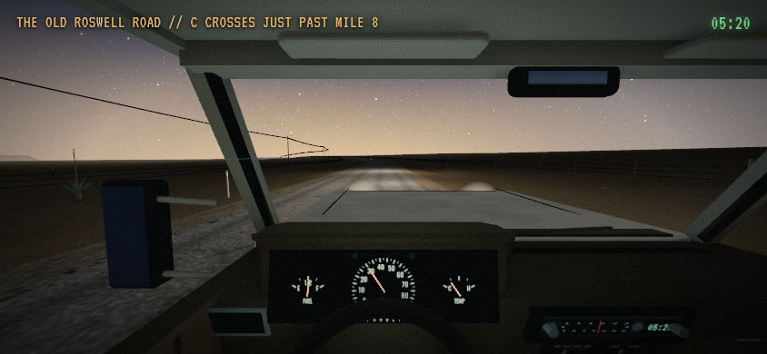
forward_040m | path 42.2 m | actual mile 0.018269245326681727 | map XYZ [29.280427274044087, 4.335003849169516, 2001.5539831382366] | clock 19208.02 | roswell/roswell 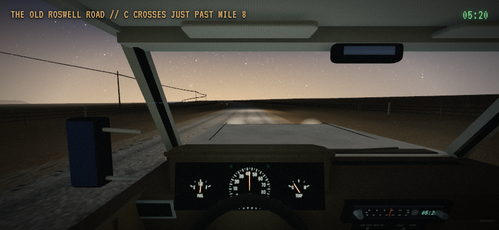
forward_080m | path 84.7 m | actual mile 0.04467445269291481 | map XYZ [71.78974191539874, 4.172374874537056, 2001.3751482317227] | clock 19209.75 | roswell/roswell forward_120m | path 123.5 m | actual mile 0.06872303013631331 | map XYZ [110.52352453272033, 4.005887200783193, 2000.465672832937] | clock 19211.32 | roswell/roswell forward_160m | path 162.5 m | actual mile 0.0929512304322504 | map XYZ [149.5113265312284, 3.9820245357857864, 1998.1996388162338] | clock 19212.91 | roswell/roswell 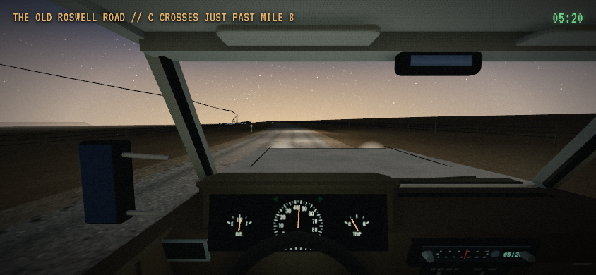
forward_200m | path 201.6 m | actual mile 0.1171836805950246 | map XYZ [188.3712256761455, 4.169183255604057, 1994.1126786349396] | clock 19214.49 | roswell/roswell 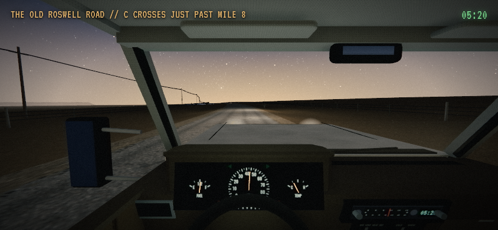
forward_240m | path 240.7 m | actual mile 0.14141917776115775 | map XYZ [226.93432097899677, 4.497399631339274, 1987.803949035453] | clock 19216.08 | roswell/roswell 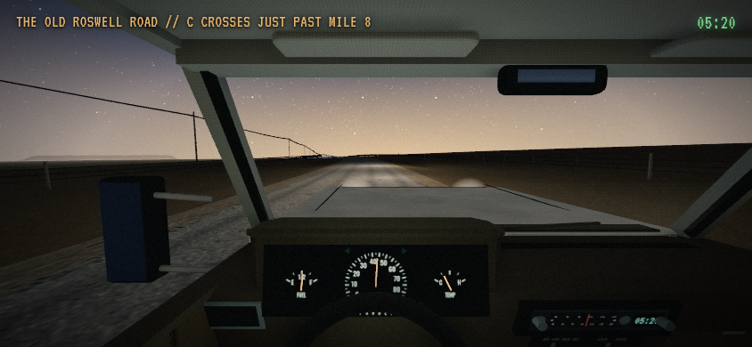
forward_280m | path 289.5 m | actual mile 0.17170391470043356 | map XYZ [274.51345345871414, 5.079837276963965, 1976.7818062670624] | clock 19218.06 | roswell/roswell 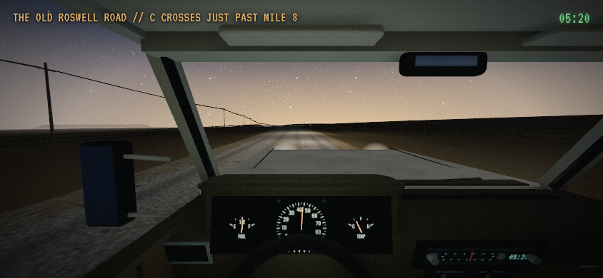
departure_end_300m | path 309.1 m | actual mile 0.18382446030812716 | map XYZ [293.2933275206178, 5.351812620319334, 1971.3873640026425] | clock 19218.85 | roswell/roswell 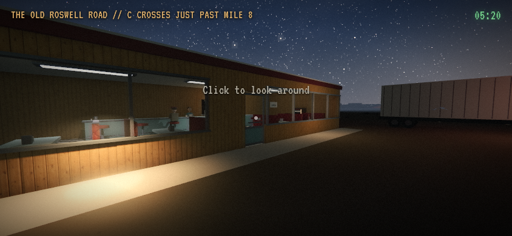
ultra_onfoot_after_0_5s | path 309.1 m | actual mile None | map XYZ [-11.050000000000182, 4.309006389843889, 2005.95] | clock 19219.35 | diner/None 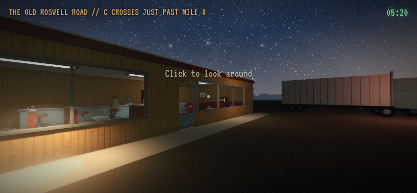
ultra_onfoot_facade | path 309.1 m | actual mile None | map XYZ [-11.050000000000182, 4.309006389843889, 2005.95] | clock 19219.35 | diner/None 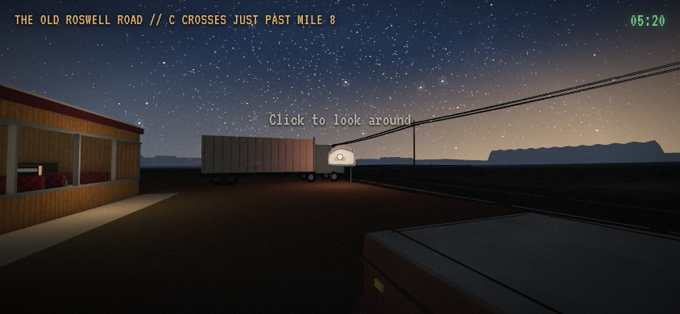
ultra_onfoot_sign | path 309.1 m | actual mile None | map XYZ [-11.050000000000182, 4.309006389843889, 2005.95] | clock 19219.35 | diner/None